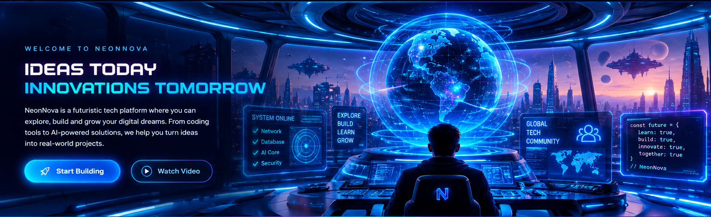

NEONNOVA LOCAL COMMAND NETWORKSELECT A WORKSPACE TO ENTER ↘
00 / MAIN DASHBOARD
Choose your workspace.
Every tool has its own dedicated dashboard. Choose a destination to enter it.
HYBRID MODE • Coding Studio runs locally; cloud account and project features require internet access.
COMMAND INTELLIGENCE / LIVE LOCAL READOUT
Command Overview
A single place to understand what NeonNova contains, where each tool belongs, and what is available in this local build.
LOCAL SYSTEM TIME
--:--:--
Waiting for browser clock…
⌁
EVENT MONITOR
Recent events & alerts
Command Center initializedLocal interface loaded in this browser.
Remote monitoring unavailableNo server health checks are configured in local-only mode.
External tools availableGitHub, Supabase, and ChatGPT open only when selected.
These are local interface events, not remote service telemetry. Real monitoring requires an explicitly configured service connection.
▦
SYSTEM DIRECTORY
What belongs where
- Command CenterNavigation, system overview, and local status.HUB_00
- Coding StudioWeb project planning and code workspace.LAB_01
- AI LabPrompt ideas, AI concepts, and debugging plans.AI_02
- Learning HubProgramming paths and practice planning.LEARN_03
- My ProjectsProject plans, milestones, and build notes.FILES_04
- CollaborationTeam roles, task planning, and review workflows.TEAM_05
- System SettingsInterface, workspace behavior, and privacy notes.SYS_06
- Connected ToolsExternal links to GitHub, Supabase, and ChatGPT.TOOLS_07
⌘
OPERATIONS
System readiness
Dashboard navigationREADY
Neon theme switchingREADY
External tool shortcutsREADY
Local code editor & previewREADY
AI model connectionNOT CONNECTED
Supabase cloud project saveCONFIGURED • TEST REQUIRED
LOCAL-FIRST DESIGN
NeonNova does not send dashboard data to a server. External websites open only when you click their links.
CORE DIRECTIVE
Build boldly. Keep control.
Use the dedicated workspaces to plan, create, learn, and organize. Features marked planned still need to be built before they become fully functional.
HUB_00 / COMMAND CENTER